Notepad

Wordpad (but save as txt instead of RTF)

Edit (from command prompt)
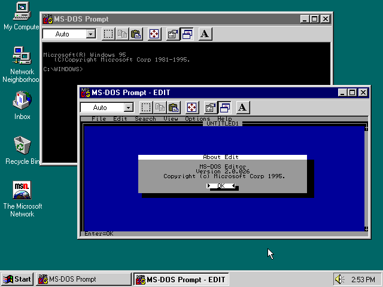
You may download notepad++

For the assembler project* this is how you write code in C and compile it using gcc (or any other compiler) and how we produce the "pass1" command.
First of all, you create a directoy with the name "pass1". Inside pass1, create the file "pass1.c". open pass1.c with your favorite text editor.
For Windows users, you have:
Notepad
Wordpad (but save as txt instead of RTF)
Edit (from command prompt)
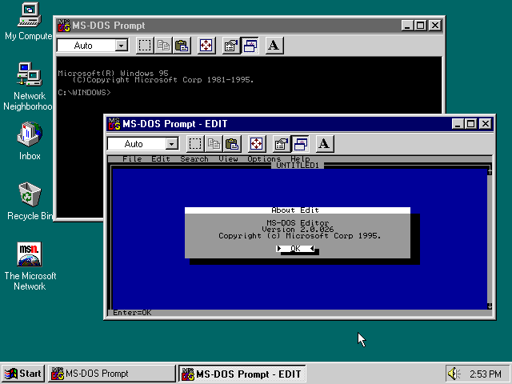
You may download notepad++
For Apple users:
Textmate

There is a "vim" for Mac OS X (macvim)
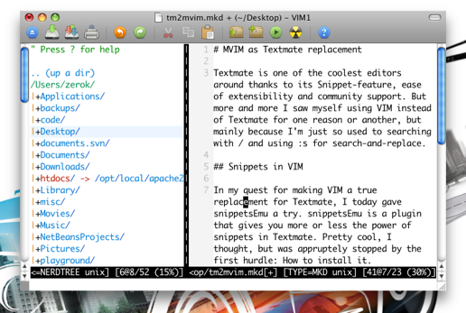
For GNU/Linux users:
nano

vi
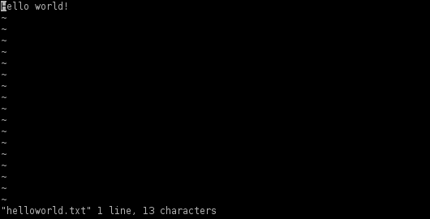
vim
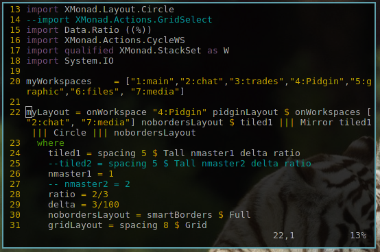
gvim
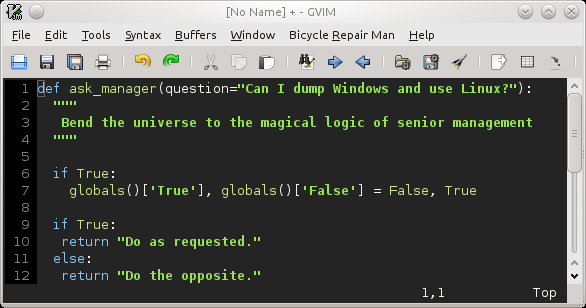
GNU Emacs (Generally Not Used Except by Middle-Aged Computer Scientists) editor
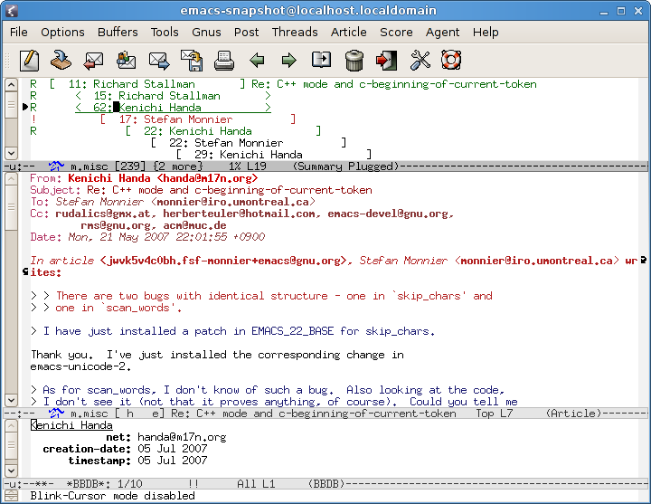
gedit
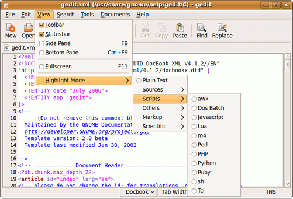
medit
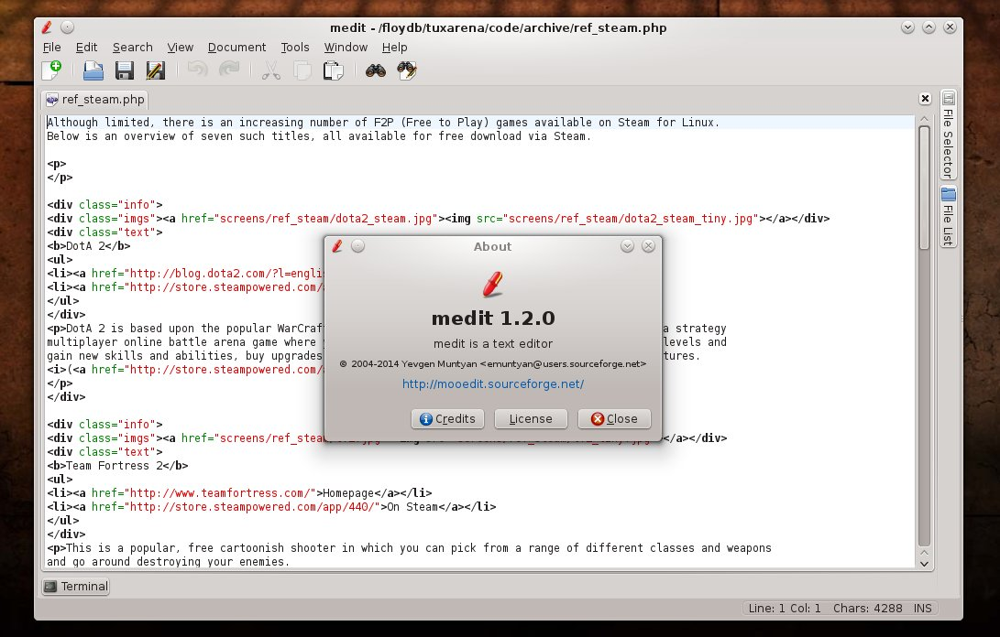
kate
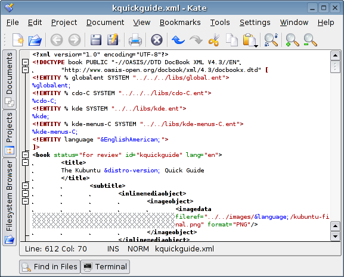
kwrite
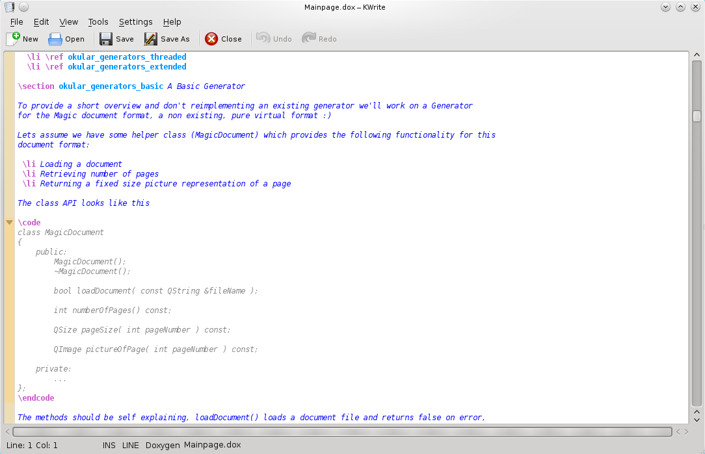
In pass1.c, write this:
#include <stdio.h>
This line includes the standard I/O library header, where printf() and scanf() are defined.
Then you write:
int
main(int
argc,
char
*argv[]) {
return
0;
}
As you can see, main() returns an integer (int). This integer is the "error code" of your program. It is returned to the parent process. If the value returned is 0, this means that the child program (our program) has terminated successfully. Any other value means that some error happened, and the parent process should take this error into consideration.
argc and argv are passed to the program by the OS...
argc is the count of arguments passed to the program. For example, if our program is executed using this command:
$ ./pass1 hello.s
In this case argc = 2, and the arguments are "./pass1" and "hello.s".
It is required in the assignment that ./pass1 must take one argument, which is the file name of the assembly file which is to be translated. Therefore, we must check argc and make sure that it is 2:
if
(argc != 2) {
fprintf(stderr, "Error:
Invalid arguments.\n");
return
-1;
/* inform the parent process of the error */
}
argv is an array of pointers to the strings of the actual arguments. argv[0] is a pointer to "./pass1" and argv[1] is a pointer to "hello.s". To print argv[1]:
printf("The assembly file is: %s\n", argv[1]);
Now the final code is:
#include <stdio.h>
int
main(int
argc,
char
*argv[]) {
if
(argc != 2) {
fprintf(stderr, "Error:
Invalid arguments.\n");
return
-1;
/* inform the parent process of the error */
}
printf("The
assembly file is: %s\n", argv[1]);
return
0;
}
Please first save the file (never forget to do this!).
There exist many free compilers for C.
For Windows users:
Mingw project is the easiest way.
For Mac OS X:
gcc for mac (Access "Apple's developer page" on the web and register an account; In Apple developer page, under "Developer Tools" category, find "Command Line Tools for Xcode". Download and install it).
For GNU/Linux, BSD, and other UNIXes:
gcc (many GNU/Linux distribution have gcc installed by default).
clang
To run the compiler:
For Windows users:
Open the command prompt (cmd.exe on Windows NT family).
Change to the "pass1" directoy:
> chdir /d "C:\Path\to\pass1\directory"
compile pass1.c:
> mingw pass1.c -o pass1.exe
Notice that "-o pass1.exe" tells the compiler that the output file should be called "pass1.exe" as required in the assignment. If the above command failed with (Cannot find mingw), then you need to add Mingw directory to %PATH% environment variable (deal with it).
After pass1.c is compiled, you can run pass1.exe by:
> pass1 hello.s
It should print "The assembly file is: hello.s" and exit.
For UNIX:
Open your terminal emulator.
Change to the "pass1" directory:
$ cd /path/to/pass1/directory
Compile pass1.c:
$ gcc pass1.c -o pass1
execute pass1:
$ ./pass1 hello.s
Too simple!
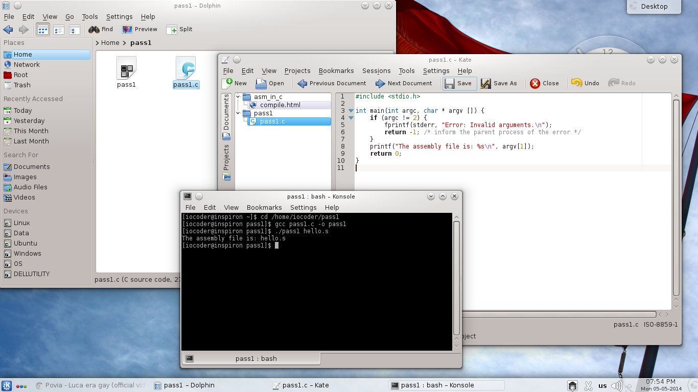
As you may have noticed, everytime you want to test your program, you have to run "gcc pass1.c -o pass1" first, then run it using "./pass1 hello.s"... you can make things simpler by creating a Makefile.
First, you need to have the "make" utility installed.
For Windows:
For Mac OS X:
"make" is included in the "Command Line Tools" package that you have already installed.
For other UNIXes:
"make" is usually installed by default.
In "pass1" directoy, create a file with the name "Makefile". Open the file with your favorite text editor and write:
all:
gcc *.c -o pass1
./pass1 hello.s
If Windows, you should write:
all:
mingw *.c -o pass1.exe
./pass1 hello.s
Note that all the lines should be preceded by a tabulator "\n" except the "all:" line. The file should end with an empty line. Note also that "*.c" means "all files with names terminating with .c". this is useful in case your project has many C files and you want to compile them together.
Now save the Makefile. From terminal, under "pass1" directory, execute:
$ make
This will execute the two commands automatically.
To learn more about Makefile language, please visit: http://www.gnu.org/software/make/manual/make.html
* This is a very old article targeting my classmates at school to make fun of them.